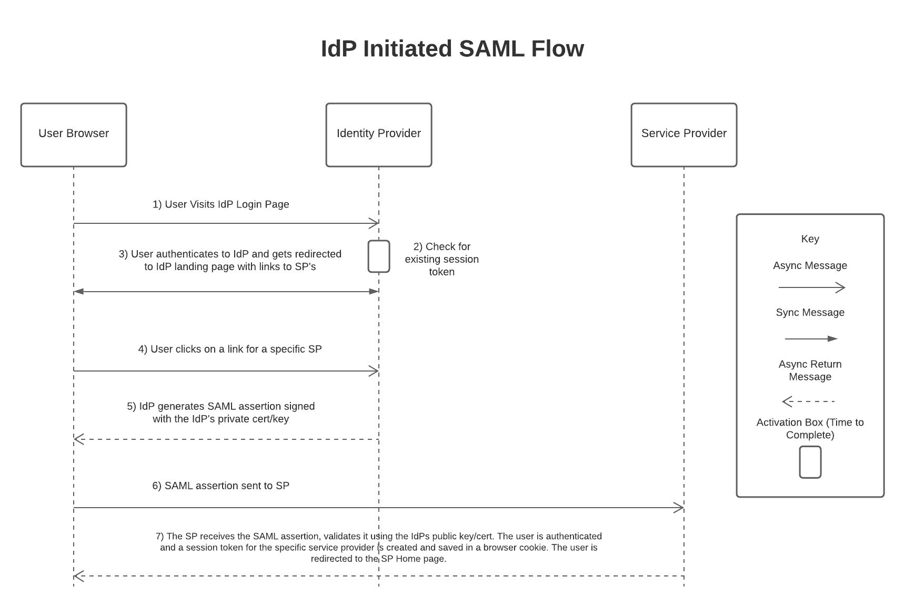
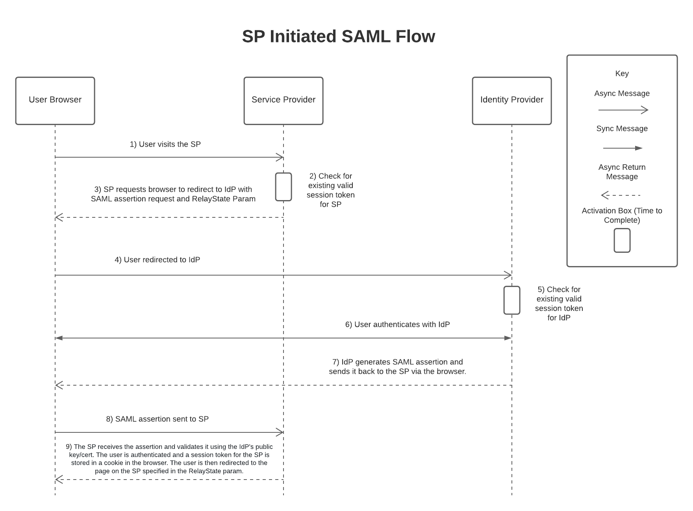
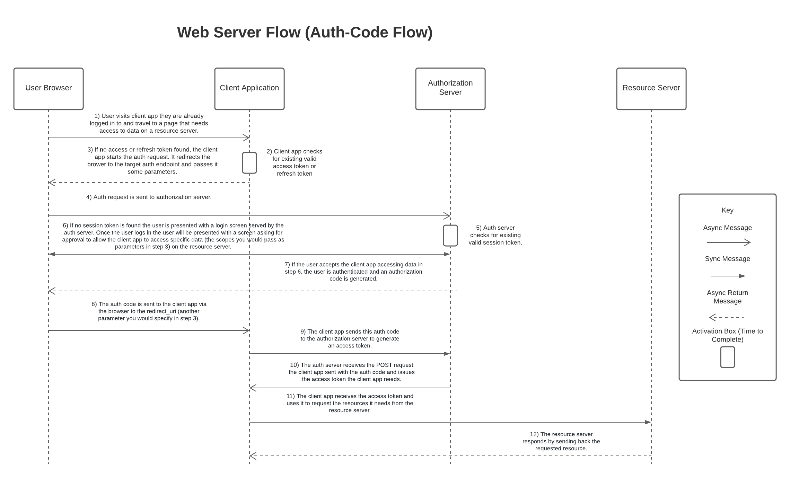
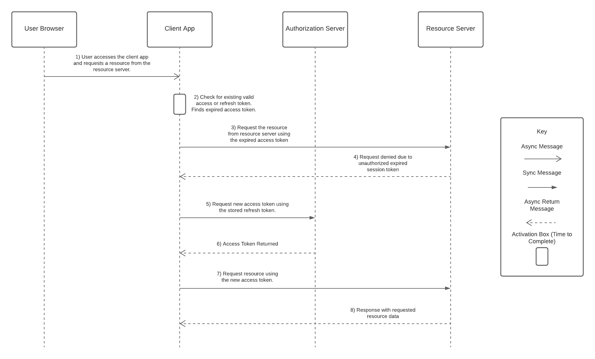
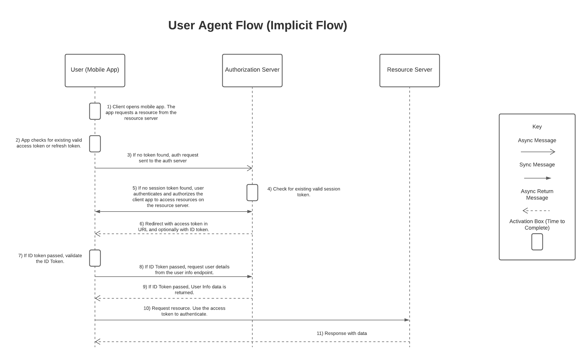
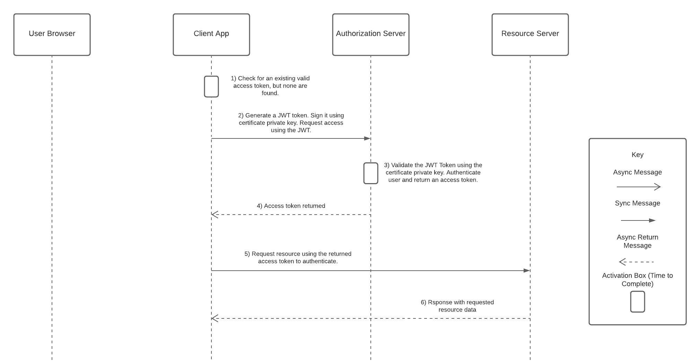

This section will cover all of the important IAM terms that you should be familiar with for the CTA Board.
What is IAM?
IAM or Identity and Access Management is the process of defining the tools, processes, monitoring and governance to leverage in order to grant internal and external users access to a system. For external users IAM is sometimes referenced as CIAM (Customer Identity and Access Management).
The key elements of an IAM Solution
- An Identity Repository - A place or system that keeps the personal details of each user. (Something like an LDAP accessible service or database like AD)
- A Management Toolbox - To manage, edit, add, and delete the data in the identity repo. (Something like Okta)
- A Monitoring Platform - A continuous monitoring solution to log user activities and storing it in an audit log (Something like Salesforce Shield Event Monitoring.
- A Policy Enforcer - To regulate and enforce the users access in the system.
Key IAM Terms
Identity - This is pretty straightforward. Identity if the unique identifier you use to identify a user in your system. Typically this is some kind of unique key like an employee id, a user name or an email. The users identity should determine who they are in the system and the rights they have as a user in the system.
Authentication - Authentication is the act of verifying a user is who they say they are. This is normally done by having the user enter a password but it could include things like having the user use an id card, fingerprint scan, facial recognition scan, etc.
Authorization - Authorization is what happens after a user has been authenticated. It is the act of determining what rights a user has in a given system (Can they access Opportunities, Cases, fields on specific objects, etc). It is critical to ensure you design authorization rights with the principle of least privilege in mind, not just for the CTA Board, but in general.
Identity Store - This is a database or system that is used to hold information about the users that a system is using. This information could be emails, name, numbers, etc as well as the information necessary to authenticate a user. This is typically something like Microsoft Active Directory.
Identity Provider (IdP) - The system that manages the identities for users. IdP’s normally allow you to create, update and maintain identity info for users. It provides authentication services for multiple applications. The primary difference between IdP’s and Identity Stores is that IdP’s do not need to maintain the data used for authentication (passwords, etc). They can connect to an identity store and have it manage that instead. The IdP then just becomes a layer on top of the Identity Store that allows you to standardize the authentication processes and user experience for authentication (Think loggin in everywhere with Okta, but Okta reaches back to Microsoft AD to authenticate a users identity). It’s worth noting that Salesforce can be your IdP for other systems (though it is limited), it can connect to a Microsoft AD Identity store using Identity Connect or your could connect to an LDAP accessible directory service or database using Mulesoft as described here or a more custom solution like Salesforce2Ldap (for the CTA always pick Mulesoft options if asked).
Service Provider (SP) - Service providers are the platforms that actually provide the services/functionality a user is typically using an IdP to login to. So for instance if a user was using Okta to login (IdP) to Salesforce, Salesforce would be the Service Provider (SP). Service Providers have their own user databases typically that determines user permissions (or authorizations) to perform specific operations in the system. The link from the users IdP credentials and the SP credentials is normally provided by Single Sign On (SSO) which we go over below.
Single Sign On (SSO) - Single Sign On is where a user is allowed to authenticate once to access multiple applications. This allows users to be more productive since they have to login less, it also provides a centralized place/tool to monitor user authentication activities and increases security and compliance (login policies, login restrictions, etc). In an SSO setup users are replicated in both the IdP and the SP. The IdP will the full list of a companies users and their authentication mechanisms (passwords, cards, etc) while the SP would just maintain a sub-list of the users allowed to actually work in the SP’s system. To identify the user in the SP from the IdP there needs to be a unique id to link them. This is typically referred to at the federation identifier (there is a field on the user object in Salesforce for this).
Multi-Factor Authentication (MFA) - Multi-Factor authentication is the process that forces a user to verify their identity in three or more ways. For example, using a password to login (something you know) and then being asked to authenticate using a password sent via text to your mobile phone (something you have) and then having something scan your fingerprint (something you possess). A lighter weight version of MFA is 2FA (two factor authentication). This is a bit simpler, where you have a user authenticate using a password and then send them a one time code via text or email to complete the login. MFA is typically managed by your Identity Provider (IdP).
User Provisioning and Deprovisioning - Pretty simple, this is the act of adding or removing a user from an identity store/repo.
Role-Based Access (RBA) - Role based access effectively controls a users access to different functionalities in different systems. This is normally managed by an IdP or Identity Store. These systems normally have something called Role Based Access Control (RBAC) or Group Memberships. You apply these roles to your users (for example Salesforce - Sales User) and when a user is provisioned in the Service Provider (by a middleware connector or pre-built mechanism) by the IdP they are given a role in the SP that mirrors their role (or group) in the IdP.
Identity as a Service (IDaaS) - These are products like Okta that offer identity products in a Software as a service manner.
LDAP (Lightweight Directory Access Protocol) - LDAP is a protocol that was designed to provide a standardized mechanism in which to interact data stored in a hierarchical data structure. It is the communication language used to communicate with other directory services servers.
Service User and Context User Authentication - Service user is a single integration user that is used to authenticate every user reaching out to the system in the same way. This is detrimental to the principle of least privilege. Context user is authenticating each user individually with the other system. This methodology allows for a more fine tuned approach to giving the user only the access/privileges they should have.
Common IAM Standards/Protocols
What are IAM Standards/Protocols - The various way data is exchanged between an identity provider and service provider. These protocols are things like SAML, OAuth and OpenID Connect. Using one of these standards to exchange data not only saves time when developing a solution but ensures your authentication mechanisms are secure, scalable and compliant. DO NOT DEVIATE FROM THESE STANDARDS AT A CTA BOARD!
Security Assertion Markup Language (SAML) - SAML is an XML based protocol that can be used for both authorization and authentication purposes. SAML Assertions are signed using XML Signature Wrapping which is a form of digital signature. Verifying a this digital signature requires access to a public key (typically a digital certificate). This digital certificate establishes trust between the IdP and SP. The IdP normally generates this certificate and it gets uploaded to the SP to be used to verify SAML assertions sent by the IdP. SAML is most often used for SSO and, ideally, should not be used for mobile phones, javascript and API’s.
Open Authorization (OAuth) - OAuth was created and is used for access delegation (secure delegated access) between a client (basically any connecting application) and a resource server (server being connected to to view or alter data) on behalf of a user. This allows a user to connect to another server without needing to authenticate with that server. Instead a token is used that is issued by an IdP that informs the resource server what the connecting client application is allowed to do.
OpenID Connect - OpenID Connect is based on OAuth 2.0 but is designed for a different purpose. It adds additional functionality on top of OAuth, the most important addition is the additional ID token (This Id is a JWT) that gets generated that contains information about the user and information about the connecting client server. There can also be custom attributes in this ID token. The ID Token can help verify the identity of the individual the token was issued to. This ID Token is digitally signed by its issuing IdP making it easy to validate and determine whether it is legitimate. OpenID Connect is most commonly leveraged for signing in using credentials from a social media platform like Facebook, Twitter, etc. OpenID Connect is leveraged by Salesforce’s Social Sign On. That being said it can also be leveraged for SSO purposes in general but it is unlikely to be used in that way for the CTA Board.
Kerberos - Kerberos is an authentication protocol that allows you to access services across a network using a ticket distribution center. This is effectively an inside the corporate network SSO protocol. When a user wants to access a service, behind the scenes they connect to the ticket distribution center that authenticates the user and sends them back a ticket granting ticket (TGT). That TGT then gets sent to the Ticket Granting Server (TGS) which decrypts the TGT and sends back a Service Ticket. The service ticket then gets sent to the Service to authenticate the user. The Service server then informs the user that they were successfully identified.
Token Types
Access Tokens - This is a token used in OAuth and OpenId Connect. This is the token sent at the end of the authentication and is used by the requesting client server to get access to resources on the resource server. A copy of this token is stored on the resource server for the longevity of the tokens existence, which is how it is verified.
Refresh Tokens - This is also a token type for OAuth and OpenId Connect. Refresh tokens are issued for clients in specific use cases. The refresh token normally lasts longer than an access token and can sometimes be set to never expire. The refresh token should be stored by the client server and used to get new token whenever needed. Most mobile phone applications utilize refresh tokens to login/connect to the resource server. That’s why you often only login once on mobile apps. Refresh tokens don’t really replace access tokens, they are just an additional token to retrieve a new access token when the old one has expired. They prevent users from needing to login over and over.
ID Token - This is a token only used by OpenId Connect. The ID Token is sent by the client to the resource server to actually verify the identity of the individual user sending the request for access.
JWT (JSON Web Token) - JWT is a standard to format data that can be used to assert the identity of a party to other parties. JWT’s can either be signed tokens called JWS’s (JSON Web Signature) or encrypted tokens called JWE’s(JSON Web Encryption). The most common variety are JWS’s, most JWT’s are signed. JWT’s consist of three main parts after being decoded: a header, a payload and a signature. More info on this in the linked video and page 118 of the Becoming a CTA Book.
Session Token (Session Id) - A session token is a unique string (that is normally hashed) that represents a login session for a user. Session tokens are normally stored in the browser cache and destroyed when a user logs out.
Authorization Code - This token type is only used in one OAuth and OpenId Connect flow (the web-server flow). It is created by the auth server and returned (via the browser) back to the client application. The client then sends this back to the auth server in exchange for an access and potentially a refresh token as well.
SAML Assertion - SAML assertions (like JWT) can be used to authenticate an individual user to a resource server. They contain user identity info, issue time and expiration time.
The Key Authentication Flows for Each Standard
SAML Flows - SAML has three main flows. IdP-Initiated, SP-Initiated and SAML Bearer assertion flow.
SAML IdP-Initiated Flow - This flow is typically used when an organization has an IdP with a home page/application page for their employees to access all applications (service providers).
The steps in this flow are as follows:
- The user visits the IdP login/home page.
- The home page will check whether the user is authenticated by checking if there is a stored cookie for the IdP domain with a valid session token. If there is no session token the user will see a login page.
- The user logs in using their username, password and whatever MFA junk they need to do. They are then redirected to the IdP home page.
- The user sees a list of links on the home page to difference service providers, they then click one of those links.
- The IdP generates a SAML assertion signed with the IdP’s private key/cert.
- The assertion is sent via the browser to the SP.
- The SP receives the SAML assertion validates it using the IdPs public key/cert. The user is authenticated and a session token for the specific service provider is created and saved in a browser cookie. The user is redirected to the SP Home page.

SAML SP-Initiated Flow - This flow is typically used when an organization has a login link for the IdP on the SP’s home page, when a user uses a bookmark to traverse to the SP’s homepage, tries to access the SP from a direct link in an email, etc, etc. Basically when the user tries to traverse to the homepage of an SP without going through the IdP first.
The steps in this flow are as follows:
- The user visits the homepage of the SP directly.
- The SP checks for an existing and valid session token stored in a cookie associated with the SP’s domain.
- If there is no valid cookie for the SP, the user is redirected to the IdP via the browser with a SAML assertion request. The target url (SP url) is passed in a parameter called RelayState. The RelayState helps redirect the user to the proper place after logging in with the IdP.
- User redirected to the IdP with RelayState param.
- The IdP checks for an existing and valid session token stored in a cookie associated with the IdP’s domain.
- If there is no cookie, the user is asked to login with the IdP.
- After the user logs in successfully a SAML assertion will be created and signed with the IdP private key/cert.
- A SAML assertion is sent to the SP via the browser along with RelayState.
- The SP receives the assertion and validates it using the IdP’s public key/cert. The user is authenticated and a session token for the SP is stored in a cookie in the browser. The user is then redirected to the page on the SP specified in the RelayState param.

OAuth 2.0 and OpenId Connect Flows
Since OpenId Connect has been built as a layer on top of OAuth most of the flows are shared between them (though there are some differences). There are 7 different flows to memorize for these two protocols, we’ll go over each of them and some key terms below.
Key Terms:
Client Application - An application that is trying to access resources on a resource server. Basically, the application making a request for data on another server.
Authorization Server - The auth server grants the right authorization to the logged in user. Essentially this is the server that grants the rights to access data on the resource server.
Resource Server - This is the server with the data/resources that the client application would like to access on behalf of the user.
Client Id/Consumer Id - A unique id given for the client application to utilize. The auth server generates this value for a specific client app after registering it with the auth server (think connected apps in Salesforce).
Client Secret/Consumer Secret - This key is a confidential unique key that the client app should never expose to the user or any external entities aside from the auth server. The auth server generates this secret when the client application is registered with the auth server (again think connected apps).
Web Server Flow (Auth-Code Flow) - This flow is typically used when a website is trying to access resources from a resource server on behalf of the user. There is one requirement to use this flow, the client server making the connected to the resource server needs a secure way to store the client secret value. The client secret should only ever be used when communicating directly with the auth server. If there is no way to secure the client secret, then this flow shouldn’t be used. This flow will eventually grant the client an access token (and potentially a refresh token) to access data on its servers.
The steps for the Web Server Flow are as follows (More detail on page 129 of Becoming a CTA Book):
- The user visits the client application (basically they visit a website) that they have already logged in to. At some point the user travels to a page that needs to access data from a resources server to display data to the user.
- The client application checks for an existing and valid access token or refresh token for the current user and the resource server it needs to access.
- If no access or refresh token is found by the client application, the client app starts the authorization process by sending an OAuth Request. The client app redirects via the browser to the target authorization endpoint and passes it some parameters.
- The authorization request built in step three is sent to the authorization server.
- The auth server checks for an existing and valid session token stored in a cookie associated with its domain.
- If no session token is found the user is presented with a login screen served by the auth server. Once the user logs in the user will be presented with a screen asking for approval to allow the client app to access specific data (the scopes you would pass as parameters in step 3) on the resource server.
- If the user accepts the client app accessing data in step 6, the user is authenticated and an authorization code is generated.
- The auth code is sent to the client app via the browser to the redirect_uri (another parameter you would specify in step 3).
- The client app sends this auth code to the authorization server to generate an access token.
- The auth server receives the POST request the client app sent with the auth code and issues the access token the client app needs.
- The client app receives the access token and uses it to request the resources it needs from the resource server.
- The resources server responds by sending back the requested resource.

Refresh Token Flow -
The Refresh Token flow is used to get a new access token using a refresh token.
Steps for the Refresh Token Flow (more detail on page 133 of the Becoming a CTA Book):
- The user visits the client application (for example a website a user visits). The app tries to access data on behalf of the user from the resource server.
- The client app checks for a valid access token for the resource server that corresponds to the user. It finds one but it’s expired, however the client app is unaware it’s expired.
- The client app uses the expired access token to request the resource from the resource server.
- The resource server returns a response indicating the request isn’t authorized due to the expired token.
- The client app uses the refresh token to get a new access token from the authorization server.
- The authorization server receives the post request, issues an access token and returns it to the client app.
- The client app receives the access token and uses this new token to request resources from the resource server.
- The resource server responds and sends back the requested resource.

User Agent Flow (Implicit Flow) -
This flow is less secure than the web server flow and is primarily used for client apps that are unable to provide secure storage for the client secret value. Javascript single page apps and mobile applications are good examples of when this flow is often used.
Steps for the User Agent Flow (more detail on page 134 of the Becoming a CTA Book):
- The user starts the application.
- The application checks for a valid access token or refresh token. If none are found, the app starts the OAuth/OpenId connect user agent flow. This is similar to the web server flow but the response type passed is token.
- The request is sent to the authorization server.
- The auth server checks for an existing and valid session token stored in a cookie associated with the servers domain.
- The user is presented with a login screen served by the auth server. They enter their username and password to authenticate. They are then presented with a screen asking for approval to allow the app to access specific scopes (resources) on the resource server.
- The user is authenticated and an access token is granted. A refresh token and ID token can also be generated depending on the scopes used.
- (Steps 7-10 are optional recommended steps if an ID token is retrieved) The client app validates the ID Token by verifying its digital signature.
- The client app can use the information in the ID token to request the full profile details of the logged in user.
- Profile details are returned.
- The client app uses the access token to request the resources from the resource server.
- The resource server sends back the requested resource.

JWT Bearer Flow - The JWT flow is most often used when you want to authorize a client app to a resource server without requiring the user to login. The digital signature in the JWT token will be used to authenticate the client app to the resource server. Since there it is not required the user actually login with this flow, the user will have needed to authorize this app by logging in at a different stage in the client app or be authorized by an admin to be able to execute this flow. A good example of admin authorized users for authentication flows in SF is when you setup a connected app, there is a setting you can adjust called “Admin approved users are pre-authorized”. The users filled out in that section of the connected app are “admin authorized users” that can run the authentication flow. This flow is often used for automated background processes, scheduled jobs, etc.
Steps for the JWT Bearer Flow (more detail on page 137 of the Becoming a CTA Book):
- The client app checks for a valid access token.
- The client app generates a JWT and signs is using its private key/certificate and then sends this to the auth server to request an access token.
- The auth server receives the JWT and validates its signature using the public key/cert of the client app.
- The access token is returned to the client app.
- The client app uses the access token to request the resource from the resource server.
- The resource server returns the requested resource.

The Device Flow - The device flow is normally used for devices that have limited input and display capabilities like TV’s and appliances.
The Asset Token Flow - This flow is normally used for IoT (Internet of Things) devices
The Username-Password Flow -